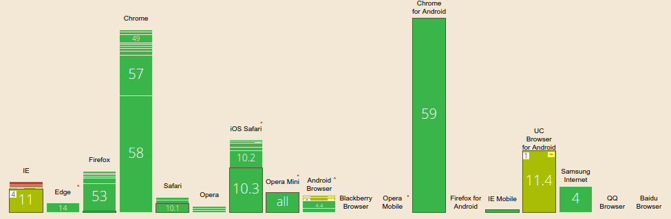

Cross-browser flexbox input add-ons
Basado en Solvey by Flexbox: Input Add-ons, dando soporte a un mayor número de los navegadores más usados, según caniuse.com
Dado el marcado:
<div class="InputAddOn"> <button>-</button> <input class="InputAddOn-field" type="number" value="1"> <button>+</button> </div>
Aplicamos las variantes de display:flex con los prefijos de navegadores correspondientes:
Además, como UC Browser y Android Browser <=4.3 no lo aplican correctamente a elementos inline, aplicamos display:block
<div class="InputAddOn"> <button>-</button> <input class="InputAddOn-field" type="number" value="1"> <button>+</button> </div>
.InputAddOn {
display: block;
display: -webkit-box;
display: -webkit-flex;
display: -moz-box;
display: -ms-flexbox;
display: flex;
}
.InputAddOn-field {
display: block;
-webkit-box-flex: 1;
-moz-box-flex: 1;
-webkit-flex: 1;
-ms-flex: 1;
flex: 1;
}
 Internet Explorer 8 y 9
Internet Explorer 8 y 9
Estos navegadores no soportan display:flexbox, pero podemos hacer uso de display:table y display:table-cell para obtener un resultado similar. Hacemos uso de comentarios condicionales.
<!--[if IE 8 ]><html class="ie8 lte-ie9 lte-ie8"><![endif]--> <!--[if IE 9 ]><html class="ie9 lte-ie9"><![endif]-->
.lte-ie9 .InputAddOn {
display: table;
width: 100%;
}
.lte-ie9 .InputAddOn > * {
display: table-cell;
}
.lte-ie9 .InputAddOn-field {
width: 100%;
}
Probado en:
-
Internet Explorer 8, 9, 10, 11
-
 Edge
Edge
-
 Firefox
Firefox
-
 Chrome
Chrome
-
 Safari
Safari
-
 Opera
Opera
-
 UC browser
UC browser